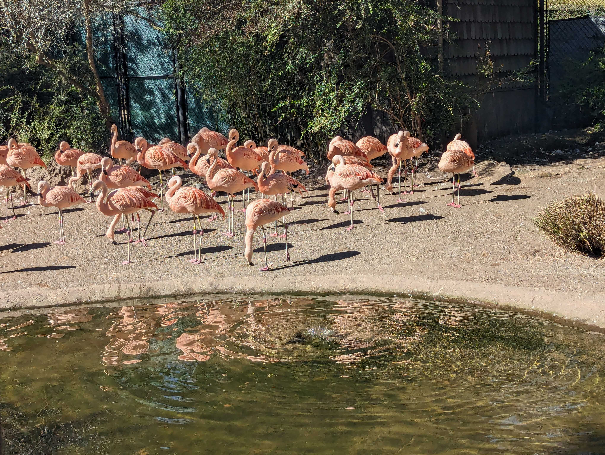

When Kolina was out and about she snapped this shot of some friendly flamingos. These wading birds are known for their long legs and bright pink plumage, and can be found all around the world. Can you wade through this challenge to find them What is the name of the area in which you'd find these flamingos
